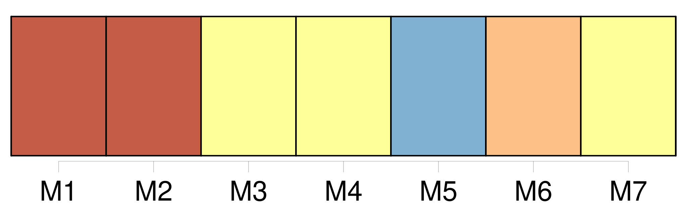
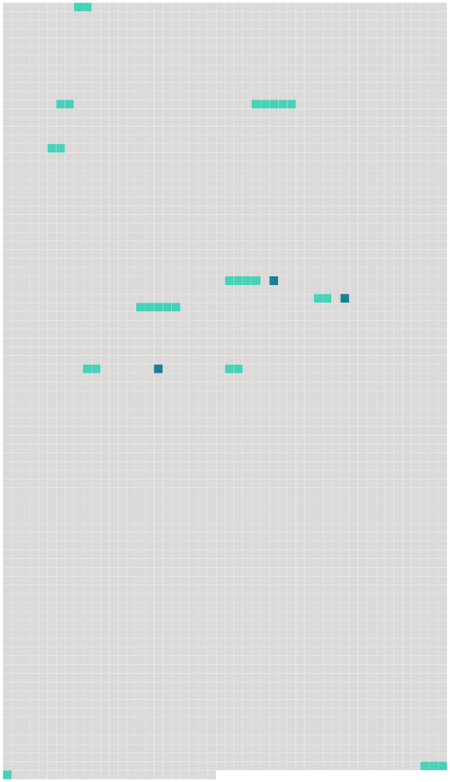

Longueur nb maillons : 13 mentions |
  |
Madame François, adossée à une planchette contre [ses légumes] , regardait, ne voyait rien, dans la maigre lueur jetée à gauche par la petite lanterne carrée, qui n'éclairait guère qu'un des flancs luisants de Balthazar. [38 phrases]
… Je vais aux Halles, je vous déballerai avec [mes légumes]
Et, comme il refusait, elle le hissa presque, de ses gros bras, le jeta sur [les carottes et les navets] , tout à fait fâchée, criant : [11 phrases] L'homme que madame François venait de recueillir, couché sur le ventre, avait ses longues jambes perdues dans le tas des navets qui emplissaient le cul de la voiture ; sa face s'enfonçait au beau milieu des carottes, dont les bottes montaient et s'épanouissaient ; et, les bras élargis, exténué, embrassant la charge énorme [des légumes] , de peur d'être jeté à terre par un cahot, il regardait, devant lui, les deux lignes interminables des becs de gaz qui se rapprochaient et se confondaient, tout là-haut, dans un pullulement d'autres lumières. [34 phrases] À présent, il roulait doucement sur [cette couche de verdure] , [qu'] il trouvait d'une mollesse de plume. [4 phrases] L'odeur fraîche [des légumes] dans [lesquels] il était enfoncé, cette senteur pénétrante des carottes, le troublait jusqu'à l'évanouissement. Il appuyait de toutes ses forces sa poitrine contre [ce lit profond de nourriture] , pour se serrer l'estomac, pour l'empêcher de crier. [19 phrases] Puis, la planche de derrière enlevée, après avoir marqué ses quatre mètres sur le trottoir avec des bouchons de paille, elle pria Florent de lui passer [les légumes] , bottes par bottes. Elle [les] rangea méthodiquement sur le carreau, parant [la marchandise] , disposant les fanes de façon à encadrer les tas d'un filet de verdure, dressant avec une singulière promptitude tout un étalage, qui ressemblait, dans l'ombre, à une tapisserie aux couleurs symétriques. [97 phrases] Et il retrouvait Paris, gras, superbe, débordant de nourriture, au fond des ténèbres ; il y rentrait, sur [un lit de légumes] ; il y roulait, dans un inconnu de mangeailles, qu'il sentait pulluler autour de lui et qui l'inquiétait. |
 |
La ressource peut être téléchargée sur la page Ortolang
Si vous avez des questions ou vous voyez des erreurs, merci d'envoyer un mail à silvia.federzoni89@gmail.com
Site développé par S. Federzoni (contact)